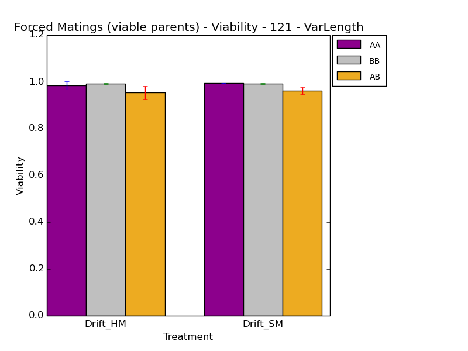
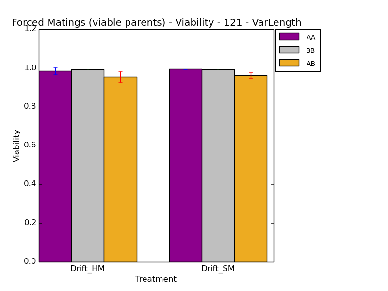

Hey, look! It's Monday. I'm working from work today, which is exciting and different. :)
Right, so I did some things. I made another analysis script. :) Posted for posterity here:
#!/bin/bash
me=`basename $0`
if [ $# -lt 2 ]
then
echo "usage ${me} <description> <prefix>"
echo "e.g. % ${me} \"118\" 118"
exit
fi
description=$1
prefix=$2
echo "Description: " $1 ${1}
echo "Prefix: " $2 ${2}
module load matplotlib
each_dir() {
pattern=$1
funct=$2
for k in *_${prefix}???;
do
if [[ -e ${k}/${pattern} ]]
then
echo $k;
cd $k/${pattern};
pwd;
eval ${funct}
cd -;
fi ;
done
}
each_root_dir() {
pattern=$1
funct=$2
echo "1"
roots=( Ctrl ScenA ScenB ScenC ScenD ScenE )
for root in ${roots[@]}
do
echo $root
for k in ${root}*_${prefix}???;
do
echo $k
path=${k}/${pattern}
if [[ -f $path ]]
then
echo $k;
cd $k/${pattern};
pwd;
eval ${funct}
cd -;
fi ;
done
done
}
extract_forcedmatings() {
rm *recombinant_viability.csv
roots=( Ctrl ScenA ScenB ScenC ScenD_Drift ScenE )
for root in ${roots[@]}
do
dobit=true
for k in ${root}*_${prefix}???;
do
path=${k}/data__${root}_analyze
file=${path}/detail_avg__baselined.dat
if [ -e $file ]
then
cd $path;
pwd;
if [ $dobit == true ]
then
part1=`python ~/research_scripts/common/extract_single_column_to_csv.py 1 detail_avg__baselined.dat`
header="#"${part1}
echo $header > ../../${root}_recombinant_viability.csv
dobit=false
fi
python ~/research_scripts/common/extract_single_column_to_csv.py 2 detail_avg__baselined.dat >> ../../${root}_recombinant_viability.csv
cd -;
fi ;
done
done
#cat detail_avg.dat | tail -n +26 >> detail-total.spop;
}
plot_forcedmatings() {
python ~/research_scripts/graph_generation/bar_chart_from_csv.py \
-x Treatment -y "Viability" -t "Forced Matings (unfiltered) - Viability - ${description}" --pair --groups=5 \
--xticks="Drift,A,B,C,E" --legend="ViabilityAA,ViabilityBB,ViabilityAB" \
--columns="11,17,5" --error \
${prefix}_forcedmatingviability_unfiltered.png \
ScenD_Drift_recombinant_viability.csv \
ScenA_recombinant_viability.csv \
ScenB_recombinant_viability.csv \
ScenC_recombinant_viability.csv \
ScenE_recombinant_viability.csv
python ~/research_scripts/graph_generation/bar_chart_from_csv.py \
-x Treatment -y "Viability" -t "Forced Matings (viable parents) - Viability - ${description}" --pair --groups=5 \
--xticks="Drift,A,B,C,E" --legend="ViabilityAA,ViabilityBB,ViabilityAB" \
--columns="14,20,8" --error \
${prefix}_forcedmatingviability_filtered.png \
ScenD_Drift_recombinant_viability.csv \
ScenA_recombinant_viability.csv \
ScenB_recombinant_viability.csv \
ScenC_recombinant_viability.csv \
ScenE_recombinant_viability.csv
roots=( ScenA ScenB ScenC ScenD_Drift ScenE )
for root in ${roots[@]}
do
echo $root
python ~/research_scripts/graph_generation/scatterplot_from_csv.py \
-x "AB Recombinant Viability" -y "AA and BB Recombinant Viability" \
-t "${root} - Unfiltered AA/BB vs AB Recombinant Viability - ${description}" \
-c "5,11,17" \
${prefix}_${root}_AABBvsAB_unfiltered_viability.png \
${root}_recombinant_viability.csv \
${root}_recombinant_viability.csv \
${root}_recombinant_viability.csv
echo " "
python ~/research_scripts/graph_generation/scatterplot_from_csv.py \
-x "AB Recombinant Viability" -y "AA and BB Recombinant Viability" \
-t "${root} - Filtered AA/BB vs AB Recombinant Viability - ${description}" \
-c "8, 14, 12" \
${prefix}_${root}_AABBvsAB_filtered_viability.png \
${root}_recombinant_viability.csv \
${root}_recombinant_viability.csv \
${root}_recombinant_viability.csv
done
}
#extract_forcedmatings
plot_forcedmatings
So, this is mildly depressing.
Also, I generated a bunch of pretty much uninformative scatter plots, because I am hella dumb.

----
As of the last dated update, I had a nice conversation with Kendall about how to use my data. She suggested using a multiple regression, which would give me the strength of each of the coefficients. This is so that I can differentiate between the effect of having viable parents, vs unfiltered parents VS the effect of sympatry/allopatry.
I did some reading, re-familiarizing myself with Ordinary Least Squares / Linear Regressions. The resulting output is a plotted line, where there is an intercept (coefficient beta_0), and a slope (coefficient beta_1). The slope and intercept are derived using the OLS method (big old linear algebra equation) to solve for the minimum distance between your points and the line described by the coefficients.
So, that's all fine. I remember what it's supposed to be doing. That's good.
Ok, so here's what I already have. I know that there is a big increase in pre-zygotic isolation when allopatry + sexual selection are introduced. I also know that without sexual selection, allopatry doesn't really do anything.
Limitations to my approach: Sexual selection is the only mechanism by which they can choose their mates. AND it's a purely speciation-based sexual selection. The fact that they're choosing a mate based on targeting a value, as opposed to maximizing a value, concerns me, since I'm not sure that it matches what organisms do in nature. I feel like I want to refine the system to have some huge number of possible traits, and let them choose among them, and then maximize on those traits. This feels like it would be more realistic. But would this be too complicated? And what mechanism would they use to max on those traits? Would they fill their genomes to +1 it, or would a single instruction, or a handful be sufficient to max it, without needing to COMPLETELY FILL THEIR GENOMES. :/
Separately, does it make sense that the traits that they are focusing on be random? Is that realistic in the how nature does it? Are the traits random? This feels like a separate question. It's not obvious that the traits HAVE to be condition dependent, though we can't really find many examples in nature that aren't condition dependent. But, I found a paper that seems to indicate that they don't have to continue to be condition dependent. [Johnstone, R. A., S. A. Rands, and M. R. Evans. "Sexual selection and condition dependence." Journal of evolutionary biology 22.12 (2009): 2387-2394.] SO, maybe having a single instruction or handfull of duplicated instructions for "enlargement/enhancement" would make sense?
Had some conversations with various folks today (THIS IS WHY I COME IN TO WORK).
I've decided that my overarching work will be in evolvability.
Per wikipedia:
Evolvability is defined as the capacity of a system for adaptive evolution. Evolvability is the ability of a population of organisms to not merely generate genetic diversity, but to generate adaptive genetic diversity, and thereby evolve through natural selection.
Actually, the wikipedia article on evolvability is pretty nice, especially the bit about alternate definitions.
------
I want to make a book of my lab notebooks, where I can include papers that I've read or am interested in, and can then take notes on. Also, the physical lab notebook will be easier to page through than my electronic documents. To that end, I need to finish bringing in all my previous lab notebook entries into noodle. The formatting is key for my project.
Features to implement with noodle:
------
Noodle lost its shit when I rebooted, and I lost my thoughts from meeting with charles. I *think* they were
Also, I started a couple of runs (120, 121):
I generated graphs for 118, pulling out the fitnesses and the number of different tasks. There's something wrong with my total task count
In the meeting with Stickleback folks, showed my stuff
Need to add 122 - Based on 121, but, add indel
----
Updated noodle to save a .md copy alongside the .html copy. Dunno how that'll play out long-term, but it's probably ok.
Made a bunch of updates to noodle, as well as finished importing every single log I could get my hands on, back to 2011. Exceptions include the notebooks that are in OneNote (.one) format, that I can't seem to import without having access to a windows machine with OneNote on it. :/ Also made a lot of progress on formatting these old logs so that they look consistent with the modern logs.
Ok, after a senseless ridiculous push, I've formatted every single entry in my lab notebook to match the latest correct formatting for dates, spacing, console commands, etc. It's all coherent, and looks moderately pretty. I am finally ready to put everything together into a book of my notes! Hooray! :D Now, it's just the work of printing out booklet versions and binding them all into a book. This I can do more slowly. But, the major part of my Thanksgiving procrastination work is complete. Uh, I should probably get back to research now. Party's over. :P
Spending the day with K in his new office. It's pretty swank. I also procrastinated pretty catastrophically again. I've now got printable PDFs of all the bits and pieces that I'm going to bind into the books. :D
Ok, I went and grabbed Wendy's, and put together the Signature and Booklet PDFs. Only thing left is to head to BEACON and print. :) Now, I should spend some time analyzing my new data. I'm going to apply the same methods that I used for 118/119.
I screwed up 120 (long run) Ctrl by forgetting to change events_V.cfg to end at 1m rather than 300k updates, so the rest of the runs failed. The Drift treatments were correct, but they don't mean much if I can't compare against a control. :/ Resubmitted the control runs.
I also slighly screwed up 121 by using seeds in 120xxx, but that's not a big deal. The science is still good. I also updated the 11_17 script to reference Ctrl_HM, Ctrl_SM, Drift_HM, and Drift_SM rather than the old set of varied roots.
caninoko@dev-intel14:~/mate_discrimination/output/121_NonFixedLength_HardAndSoftMatch$ ../../scripts/11_17_analysis.sh "121 - VarLength" 121 caninoko@dev-intel14:~/mate_discrimination/output/121_NonFixedLength_HardAndSoftMatch$ ../../scripts/11_22_analysis.sh "121 - VarLength" 121
 

caninoko@dev-intel14:~/mate_discrimination/output/122_NonFixedLength_HardAndSoftMatch_InDels$../../scripts/11_17_analysis.sh "122 - VarLengthInDel" 122 caninoko@dev-intel14:~/mate_discrimination/output/122_NonFixedLength_HardAndSoftMatch_InDels$../../scripts/11_22_analysis.sh "122 - VarLengthInDel" 122
So, I don't know what to think there. My original mutation rates for INDELs was DIV_INS_PROB 0.016 and DIV_DEL_PROB 0.016, which adds up to an average equivalent 0.00016 copy insertion and deletion rate, bringing the total mutation rate per site to 0.00266. This seems like a mild addition. :/ But, maybe it was still too much? I moved the rates over to the COPY mut section, which makes more sense to me... So, the new rates are 0.0005 COPY_INS_PROB and COPY_DEL_PROB, and I scaled down the point mutation rate to 0.0015, which should be an equivalent mutation rate to the original expeiremtn (0.0025).
I submitted run 123 to test this.
In any case, the INDELs seem to be pretty disruptive to the selection of mates. I bet these are pushing to the edges (0 and 255) way more than you would expect, in addition.